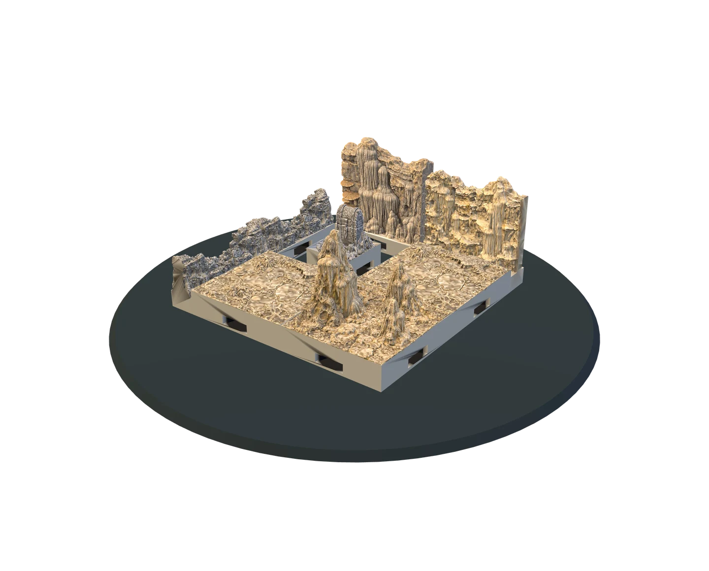

Shape the campaign
Develop the setting, themes, player hooks, campaign length, key characters and an outline for each chapter.
AN OPTIONAL CREATIVE COMPANION
Keep your story, locations, missions and encounters together in a campaign workspace on your own PC. Ask for ideas, shape them with a chat or voice conversation, and connect the story to terrain you can actually build.
The campaign workspace is saved locally. AI is optional and needs an internet connection.

FROM YOUR FIRST IDEA TO GAME NIGHT
Start with a short description. The campaign builder can ask friendly follow-up questions, offer sensible choices and help you decide what to work on next.

Develop the setting, themes, player hooks, campaign length, key characters and an outline for each chapter.
Turn locations into scenes, missions, choices and consequences. Keep private DM notes separate from player handouts.
Ask for encounter layouts using your installed terrain. Review suggestions, then edit the scene in the desktop builder.
Generate campaign covers and scene art through a supported image model, then save the images with your campaign files.
TALK OR TYPE
Use ordinary text chat, dictate a thought, or choose a realtime voice conversation. Explain the idea in your own words; ask for options when you are unsure; request a change when a suggestion does not fit.
You remain in control. Generated writing and images can be reviewed and edited. The app cannot replace your rules books or decide how your table must play.
AI SETTINGS
The model names below are presets available in the client. AI choices can change over time as providers update their services.
Default, efficient campaign model.
Optional higher-capability choice.
Realtime spoken conversation.
Campaign art generation.
YOUR CHOICE, EVERY TIME
Terrain Foundry remains a local desktop editor. Build terrain, save worlds and encounters, browse installed scenery and export print files with AI switched off and no account signup.